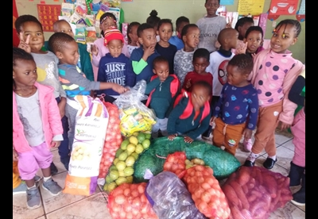

Welcome to Chubby Chums!
Chubby Chums is a non-profit child protection organization founded in 1999 by Tony Barnard and Martin Graham to help impoverished, ill and abused children. Our organization has gone from working out of an enclosed veranda to incorporating 36 children’s homes. The organization was officially registered as a Section 21 corporation in 2000, and is also recognized as a Non-Profit Organization, Non-Government Organization and Public Benefit Organization.

Our Mission
The Chubby Chums organization was originally founded to assist poverty-stricken children in need, children suffering from illness and disease, and children in abusive households. Chubby Chums now works in partnership with Child Protection Units and Child Treatment Services to stop child abuse, child neglect, child exploitation, and to promote the importance of ECD. Chubby Chums primarily operates in Johannesburg and the Far East Rand Regions.